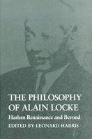

<body bgcolor="#FFFFFF" text="#000000" link="#0000FF" vlink="#CC0000" alink="#CC0000"><center><hr width="350" size="1" align="center" noshade>Important writings on cultural pluralism, value relativism, and critical relativism<hr width="350" size="1" align="center" noshade><p><a href="https://cdcshoppingcart.uchicago.edu/Cart/ChicagoBook.aspx?ISBN=9780877225843&&PRESS=temple" target="_top">Buy this book!</a> | <a href="https://cdcshoppingcart.uchicago.edu/Cart/Cart.aspx?PRESS=temple" target="_top">View Cart</a> | <a href="https://cdcshoppingcart.uchicago.edu/Cart/Cart.aspx?PRESS=temple" target="_top">Check Out</a></p><p></p></center><!--none//--><h1>The Philosophy of Alain Locke</h1>
<H2>Harlem Renaissance and Beyond</H2>
<h3>edited by Leonard Harris</h3>
<P>cloth 0-87722-584-2 $34.95, Jan 89, <FONT COLOR=#990033>Out of Print</FONT>
<br>paper 0-87722-829-9 $36.95, Feb 91, <FONT COLOR=#990033>Available</FONT>
<br>Electronic Book 1-43990-436-7 $36.95 <FONT COLOR=#990033>Out of Print</FONT>
<BR> 344 pp
8&nbsp;halftones
</P><BLOCKQUOTE><I>"An especially timely book in its constant emphasis on the deep connection between the ethical/political and the metaphysical/epistemological spheres of philosophy and indeed 'real life.'"</I>
<br>&#151<b><I>Radical Philosophy Review of Books</I></b><I></I></BLOCKQUOTE>
<p>This collection of essays by American philosopher Alain Locke (1885-1954) makes readily available for the first time his important writings on cultural pluralism, value relativism, and critical relativism. As a black philosopher early in this century, Locke was a pioneer: having earned both undergraduate and doctoral degrees at Harvard, he was a Rhodes scholar at Oxford, studied at the University of Berlin, and chaired the Philosophy Department at Howard University for almost four decades. He was perhaps best known as a leading figure in the Harlem Renaissance.
<p>Locke’s works in philosophy&#151many previously unpublished&#151conceptually frame the Harlem Renaissance and New Negro movement and provide an Afro-American critique of pragmatism and value absolutism, and also offer a view of identity, communicative competency, and contextualism. In addition, his major works on the nature of race, race relations, and the role of race-conscious literature are presented to demonstrate the application of his philosophy. Locke’s commentaries on the major philosophers of his day, including James, Royce, Santayana, Perry, and Ehrenfels help tell the story of his relationship to his former teachers and his theoretical affinities.
<p>In his substantial Introduction and interpretive concluding chapter, Leonard Harris describes Locke’s life, evaluates his role as an American philosopher and theoretician of the Harlem Renaissance, situates him in the pragmatist tradition, and outlines his affinities with modern deconstructionist ideas. A chronology of the philosopher’s life and bibliography of his works are also provided. Although much has been written about Alain Locke, this is the first book to focus on his philosophical contributions.
<BR>&nbsp;<h2>Reviews</h2>
<p><I>"There is absolutely no doubt that this book is a very useful addition to the corpus of work in Afro American&#151indeed, in American&#151philosophy. Locke's unpublished work on the question of value reveals a good deal about the ways in which American philosophers approached questions of value in the mid-century, before logical positivism had had its major impact on American thought; and his contributions to the issue of cultural pluralism are historically important and still influential."</I>
<br>&#151<b>Anthony Appiah</b>, Cornell University
<p><I>"A challenging book. It forces the reader to cross interdisciplinary boundaries that are not often transgressed."</I>
<br>&#151<b><I>Ethics</I></b>
<p><I>"It is the first volume to anthologize the specifically </I>philosophical<I> writings of an Afro-American savant who is virtually unknown as a philosopher. It thereby introduces us to a new Alain Locke. And this occurs at a time when a number of younger Afro-American philosophers have become increasingly curious about their ancient sage."</I>
<br>&#151<b><I>Quest: An African Journal of Philosophy</I></b>
<BR>&nbsp;<h2>Contents</h2><P>
<p>Introduction
<br>Rendering the Text &#150 Leonard Harris
<p><b>Part I: Epistemological Foundations</b>
<br>1. Values and Imperatives
<br>2. Pluralism and Intellectual Democracy
<br>3. Cultural Relativism and Ideological Peace
<br>4. A Functional View of Value Ultimates
<br>5. Pluralism and Ideological Peace
<br>6. Good Reading
<br>7. Value
<p><b>Part II: Valuation: Commentaries and Reviews</b>
<br>8. The Orientation of Hope
<br>9. Unity through Diversity
<br>10. Santayana
<br>11. Moral Imperatives for World Order
<br>12. Philosophy Alive
<br>13. Values That Matter
<p><b>Part III: Identity and Plurality</b>
<br>14. The Problem of Race Classification
<br>5. The Ethics of Culture
<br>16. The Concept of Race as Applied to Social Culture
<br>17. The Contribution of Race to Culture
<br>18. Who and What Is "Negro"?
<br>19. Frontiers of Culture
<p><b>Part IV: Identity and Education</b>
<br>20. Negro Education Bids for Par
<br>21. Negro Needs as Adult Education Opportunities
<br>22. The Need for a New Organon in Education
<p><b>An Interpretation</b>
<br>Rendering the Subtext: Subterranean Deconstructive Project &#150 Leonard Harris
<p>Chronology
<br>Bibliography
<br>Index
</P><BR>&nbsp;<H2>About the Author(s)</H2>
<P><b>Leonard Harris</b> is Associate Professor of Philosophy at Morgan State University.</P>
<BR><H2>Subject Categories</H2>
<p><A HREF="/tempress/philosophy.html" TARGET="_top">Philosophy and Ethics</a>
<BR><A HREF="/tempress/african.html" TARGET="_top">African American Studies</a>
</p>
<p align="center"><a href="https://cdcshoppingcart.uchicago.edu/Cart/ChicagoBook.aspx?ISBN=9780877225843&&PRESS=temple" target="_top">Buy this book!</a> | <a href="https://cdcshoppingcart.uchicago.edu/Cart/Cart.aspx?PRESS=temple" target="_top">View Cart</a> | <a href="https://cdcshoppingcart.uchicago.edu/Cart/Cart.aspx?PRESS=temple" target="_top">Check Out</a></p><p><font face="Arial" size="1"><a href="copyright.html" onMouseOver="window.status='Web Copyright Policy';return true;" onMouseOut="window.status=''" title="Web Copyright Policy">&copy;</a> 2015 <a href="http://www.temple.edu" target="new" onMouseOver="window.status='Link to Temple University home page';return true;" onMouseOut="window.status=''" title="Link to Temple University home page">Temple University</a>. All Rights Reserved. http://www.temple.edu/tempress/titles/595_reg.html</font></p>